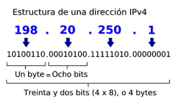
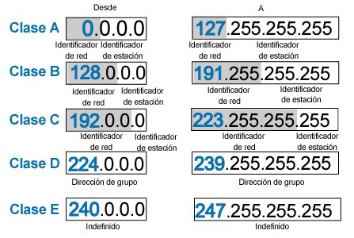

El Protocolo de Internet versión 4 (en inglés, Internet Protocol version 4, IPv4), es la cuarta versión del Internet Protocol (IP), un protocolo de interconexión de redes basados en Internet, y que fue la primera versión implementada en 1983 para la producción de ARPANET. Definida en el RFC 791, el IPv4 usa direcciones de 32 bits, limitadas a 232 = 4 294 967 296 direcciones únicas, muchas de las cuales están dedicadas a redes locales (LAN). Por el crecimiento enorme que ha tenido Internet (mucho más de lo que esperaba, cuando se diseñó IPv4), combinado con el hecho de que hay desperdicio de direcciones en muchos casos (consultar las secciones que siguen), ya hace varios años se observó que escaseaban las direcciones IPv4.
Esta limitación ayudó a estimular el estudio sobre la factibilidad de implantación de un nuevo protocolo IPv6, que en el año 2016 ya está en las primeras fases de pruebas, y que se espera que termine reemplazando a actual protocolo IPv4.
El IPv4 utiliza direcciones de 32 bits que limitan el espacio de direcciones a 4 294 967 296 (232) direcciones posibles.
El IPv4 (Protocolo de Internet versión 4) reserva bloques de direcciones especiales para redes privadas (en total 16 777 216 direcciones, o sea, (224), así como direcciones de multidifusión (268 435 456 direcciones, o sea, 228).
Las direcciones IPv4 pueden representarse en cualquier notación que exprese un valor entero de 32 bits. La mayoría de las veces se escriben en la notación decimal, la que consta de cuatro octetos de la dirección expresada individualmente en números decimales, y separados uno del siguiente por puntos.
En el diseño original de IPv4, una dirección IP se dividió en dos partes: el identificador de red era el octeto más significativo de la dirección, y por su parte, el identificador de estación (anfitrión o host) era el resto de la dirección. Este último también fue llamado el campo de descanso. Esta estructura permitía un máximo de 256 identificadores de red, que rápidamente se encontró que eran inadecuados.
Para superar este límite, el octeto de dirección más significativo se redefinió en 1981 para crear clases de red, en un sistema que más tarde se conoció como redes con clase. El sistema revisado definió cinco clases. Las clases A, B y C tenían diferentes longitudes de bits para la identificación de la red. El resto de la dirección se usó como anteriormente para identificar un host dentro de una red. Debido a los diferentes tamaños de campos en diferentes clases, cada clase de red tenía una capacidad diferente para direccionar a sus huéspedes. Además de las tres clases para direccionar hosts, la Clase D se definió para el direccionamiento de multidifusión, y la Clase E se reservó para aplicaciones futuras.
